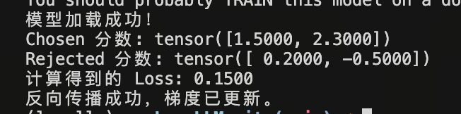
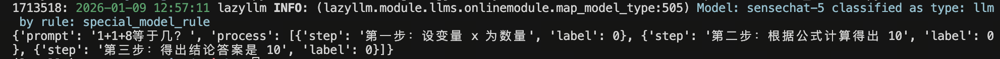
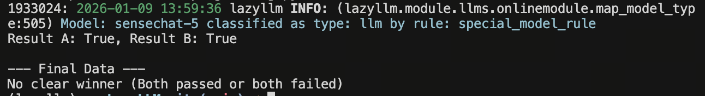

第16课时：偏好数据构建¶
1. 概论：为什么 SFT 不够用了？我们为什么需要偏好数据？¶
在之前的课程中，我们深入讲解了 SFT（Supervised Fine-Tuning，监督微调）。通过 SFT，我们成功教会了模型“如何像人类一样说话”。然而，随着大模型研究的深入，学术界和工业界逐渐发现，仅靠 SFT 存在一个难以逾越的“模仿陷阱”。
本节课，我们将探讨这一问题的本质，并引出解决之道——偏好数据 (Preference Data)。
1.1 SFT 的局限性：只学概率，不懂价值¶
SFT 模型的训练目标是最大化似然估计 (Maximum Likelihood Estimation, MLE)，即最小化交叉熵损失（Cross-Entropy Loss）。
-
数学本质：SFT 实际上是在做“文本补全”。模型只关心：“根据上文，下一个字填什么，最像训练集里的分布？”
-
致命缺陷：
-
缺乏判断力：如果训练集里包含错误的知识或有害的言论，SFT 会照单全收并完美模仿。它不知道“真”与“假”，只知道“像”与“不像”。
-
幻觉的温床：SFT 鼓励模型在不知道答案时强行进行补全（因为必须预测下一个 Token），这直接导致了幻觉（Hallucination）的产生。
-
无法量化的优劣：对于开放式问题（如“写一首诗”），答案没有唯一的标准对错。SFT 无法告诉模型，什么样的诗是“好”的，什么样的诗是“平庸”的。
-
一句话总结：SFT 让模型具备了能力 (Capability)，但没有赋予它价值观 (Values)。它像一个博学但口无遮拦的鹦鹉，能流利地说话，但不知道什么话该说，什么话不该说。
1.2 偏好数据的崛起：从“能力”到“对齐”¶
为了解决 SFT 的局限性，AI 对齐 (AI Alignment) 的概念应运而生。我们需要一种新的数据形式，不仅仅告诉模型“怎么说”，还要告诉模型“哪个更好”。
这就是偏好数据 (Preference Data)。它是连接“预训练模型（野性）”与“符合人类价值观的 AI（理性）”之间的桥梁。
📜 历史背景：InstructGPT 的转折点¶
2022 年，OpenAI 发表了里程碑式的论文 Training language models to follow instructions with human feedback (InstructGPT)。 他们发现，一个经过 RLHF (基于人类反馈的强化学习) 训练的 1.3B 参数模型，在人类评估中，竟然胜过了参数量大 100 倍的 GPT-3 (175B)。 这一结果震惊了业界，证明了引入人类偏好数据比单纯堆砌算力和参数更能提升模型的实际可用性。
1.3 理论核心：Bradley-Terry 模型与价值映射¶
偏好数据的核心逻辑不再是“预测下一个词”，而是“比较” (Comparison)。
我们将人类的价值观（有用性、安全性、诚实性）映射为一个数学上的偏序关系。
- 数据形态：我们需要构建三元组
(Prompt, Chosen, Rejected)，明确告诉模型：在当前提示词下，回答 \(y_{chosen}\) 优于回答 \(y_{rejected}\)。 - 数学假设：这通常基于 Bradley-Terry 模型，假设两个回答之间的胜率与它们隐含的“奖励值”之差成正比：
1. 概率项 \(P(y_w > y_l | x)\)
\(x\) (Prompt)：输入的提示词或问题。
\(y_w\) (Winning response)：在人类偏好标注中“胜出”的回答，即质量更好、更符合人类意图的样本。
\(y_l\) (Losing response)：在对比中“落败”的回答，即质量较差的样本。
\(y_w > y_l\)：表示一个偏好序关系，即在给定 \(x\) 的情况下，\(y_w\) 优于 \(y_l\)。
整个项：表示“当给定问题 \(x\) 时，人类观察者认为回答 \(y_w\) 比 \(y_l\) 更好的条件概率”。
2. 奖励函数 \(r^*(x, y)\)
\(r\)(Reward Function)：隐性的或理想的奖励模型。
\(r(x, y_w)\)：奖励模型对“好回答”给出的标量分值。
\(r(x, y_l)\)：奖励模型对“差回答”给出的标量分值。
物理意义：该模型假设人类的偏好是由一个潜在的奖励值驱动的。分值越高，回答被选中的概率越大。
3. 激活函数 \(\sigma\) (Sigmoid)
定义：\(\sigma(z) = \frac{1}{1 + e^{-z}}\)。
作用：
归一化：将两个奖励值的差值 \((r_w - r_l)\) 映射到 \((0, 1)\) 区间，使其符合概率定义。
非线性转换：当 \(y_w\) 的得分远高于 \(y_l\) 时，概率趋近于 1；当两者得分接近时，概率趋近于 0.5（即随机选择）。
4. 差值项 \(r^*(x, y_w) - r^*(x, y_l)\)
含义：这是两个回答在奖励空间中的相对差距。
重要性：在 Bradley-Terry 模型中，决定偏好概率的不是奖励的绝对数值，而是它们的相对差值。
5. 在训练中的应用 (Loss Function)
在实际训练奖励模型（Reward Model）时，我们通常最大化这个概率。对应的损失函数通常定义为：
\[\mathcal{L}(\phi) = -E_{(x, y_w, y_l) \sim D}[\log(\sigma(r_\phi(x, y_w) - r_\phi(x, y_l)))]\]通过最小化这个负对数似然损失，我们可以迫使模型增大 \(r(x, y_w)\) 并减小 \(r(x, y_l)\)，从而让模型学会区分答案的好坏。
无论是传统的 RLHF (Reinforcement Learning from Human Feedback) 流程中训练独立的奖励模型 (Reward Model)，还是目前主流的 DPO (Direct Preference Optimization) 直接优化策略模型，其核心燃料都是这种成对的偏好数据。
本节课目标：我们将深入数据工程的腹地，跳过复杂的数学推导，手把手教你如何从零开始构建高质量、低噪声的偏好数据集，为您的大模型注入“灵魂”。
2. 构造 Chosen vs Rejected：偏好数据的基本原子¶
偏好数据的核心逻辑非常简单：“对比”。我们需要告诉模型，面对同一个问题，答案 A 比答案 B 好。
2.1 Pairwise (成对) 数据格式¶
这是目前最主流、最通用的格式，适用于 PPO 的 Reward Model 训练以及 DPO/IPO/KTO 等算法。 其背后的数学假设是 Bradley-Terry 模型，即：
其中 \(r\) 是我们需要训练的奖励模型。
核心结构¶
一条标准的 Pairwise 数据包含三个字段：
- Prompt (提示词)：用户的问题。
- Chosen (胜者)：质量更高、更符合人类偏好的回答。
- Rejected (败者)：质量较差、存在幻觉、有害或冗余的回答。
📝 JSONL 数据样例¶
{
"instruction": "请解释量子纠缠的概念。",
"input": "",
"output": [
{
"content": "量子纠缠是量子力学中的一种现象，描述了两个或多个粒子之间的一种特殊连接...",
"role": "chosen",
"score": 0.98
},
{
"content": "我不知道你在说什么，量子纠缠就是两个球缠在一起。",
"role": "rejected",
"score": 0.12
}
]
}
🏗️ 构建策略：如何制造差异？¶
要训练出好的判别能力，Chosen 和 Rejected 之间必须有明显的质量差 (Margin)。
-
同模型采样 (Self-Sampling / Rejection Sampling)：
-
操作：使用当前 SFT 模型，设置较高的 Temperature (如 1.0) 增加多样性，对同一个 Prompt 生成 \(N\) 个回答。
-
筛选：利用 Reward Model 或 LLM 打分，取最高分者为 Chosen，最低分者为 Rejected。
-
原理：这是 DPO 论文中推荐的“On-policy”数据构造方式，因为数据分布与模型自身完全一致，训练最稳定。
-
代码示例:
import torch from transformers import AutoModelForCausalLM, AutoTokenizer def generate_pairwise_self_sampling(prompt, model, tokenizer, n=5): inputs = tokenizer(prompt, return_tensors="pt").to(model.device) # 1. 操作：高 Temperature 采样生成 N 个回答 outputs = model.generate( **inputs, max_new_tokens=128, num_return_sequences=n, do_sample=True, temperature=1.0, # 增加多样性 top_p=0.9 ) responses = [tokenizer.decode(out[inputs.input_ids.shape[1]:], skip_special_tokens=True) for out in outputs] # 2. 筛选：模拟 Reward Model 打分 (实际应用中应调用训练好的 RM) # 这里我们用一个假设的打分函数 score_model() scores = [mock_reward_model(prompt, r) for r in responses] # 取最高分为 Chosen，最低分为 Rejected best_idx = torch.argmax(torch.tensor(scores)).item() worst_idx = torch.argmin(torch.tensor(scores)).item() return { "instruction": prompt, "chosen": responses[best_idx], "rejected": responses[worst_idx], "margin": scores[best_idx] - scores[worst_idx] } def mock_reward_model(p, r): return len(r) * 0.1 print("策略 1：同模型采样完成构建")
-
-
异构模型对抗 (Model Wars)：
-
Chosen 来源：使用“天花板”模型（如 GPT-4o, Claude 3.5 Sonnet）。
-
Rejected 来源：使用较弱的模型（如 Llama-2-7b）或甚至是一个未微调的 Base Model。
-
优点：提供了高质量的“学习目标”，适合模型蒸馏。
-
代码示例:
import openai # 假设 Chosen 来源 from transformers import pipeline # 假设 Rejected 来源 def generate_pairwise_model_war(prompt): # 1. Chosen 来源：如 GPT-4o chosen_response = openai.ChatCompletion.create( model="gpt-4o", messages=[{"role": "user", "content": prompt}] ).choices[0].message.content # 2. Rejected 来源：弱模型或 Base Model (如 Llama-2-7b) weak_model = pipeline("text-generation", model="meta-llama/Llama-2-7b-hf") rejected_response = weak_model(prompt, max_new_tokens=128)[0]['generated_text'] # 3. 构造标准的 Pairwise 格式 return { "instruction": prompt, "chosen": chosen_response, "rejected": rejected_response, "strategy": "Model_Wars" } print("策略 2：异构模型对抗完成构建")
-
代码示例：如何训练奖励模型 (Reward Model)
import torch
import torch.nn.functional as F
from transformers import AutoModelForSequenceClassification
model_name = "shibing624/text2vec-base-chinese" # 也可以换成你的路径
try:
reward_model = AutoModelForSequenceClassification.from_pretrained(model_name, num_labels=1)
print("模型加载成功！")
except:
print("请检查网络或模型路径")
# 模拟前向传播得到的奖励分值
# 假设 batch_size = 2，分值是模型对 (prompt+chosen) 和 (prompt+rejected) 的输出
chosen_rewards = torch.tensor([1.5, 2.3], requires_grad=True)
rejected_rewards = torch.tensor([0.2, -0.5], requires_grad=True)
loss = -F.logsigmoid(chosen_rewards - rejected_rewards).mean()
print(f"Chosen 分数: {chosen_rewards.data}")
print(f"Rejected 分数: {rejected_rewards.data}")
print(f"计算得到的 Loss: {loss.item():.4f}")
loss.backward()
print("反向传播成功，梯度已更新。")

2.2 Listwise (列表排序) 与 Plackett-Luce 模型¶
当对比不仅局限于两两比较（Pairwise）时，我们会采用 Listwise 排序。相比于简单的“二选一”，Listwise 能够捕捉更复杂的偏好序关系和强度信息。
1. 核心定义与数据结构¶
在 Listwise 场景下，标注员不再只是选出最好的一个，而是对一组 \(K\) 个输出进行全排序。
- Prompt: "写一首关于春天的诗"
- Responses: \(\{y_1, y_2, y_3, y_4\}\)
- Ranking (Label): \([y_2 \succ y_4 \succ y_1 \succ y_3]\)
- 即：诗B > 诗D > 诗A > 诗C
2. 理论基石：Plackett-Luce (P-L) 模型¶
Plackett-Luce 模型是处理 Listwise 数据的标准概率模型，它将排序问题转化为一系列连续选择的概率乘积。
- 模型假设：假设每个样本 \(y_i\) 都有一个潜在的奖励分（Score）\(s_i = r(x, y_i)\)。
- 概率计算：给定一个排序 \(\pi = [y_1, y_2, ..., y_k]\)，该排序出现的概率为：
- 直观理解：这就像是一个“不放回抽奖”过程。首先从所有样本中选出第一名的概率是 Softmax 分数；接着在剩下的样本中选出第二名，以此类推。
3. 为什么使用 Listwise？¶
- 信息密度更高：一次全排序包含 \(K!\) 种可能的顺序，相比 Pairwise 提供了更多的负采样约束。
- 解决传递性矛盾：在 Pairwise 中可能出现 \(A > B, B > C, C > A\) 的循环矛盾，而 Listwise 强制建立全局序。
- 区分偏好强度：通过 P-L 模型，可以更精准地推断出样本间的相对差距。例如，如果 A 经常排在首位且遥遥领先，其奖励分 \(s_A\) 会显著高于其他样本。
4. 算法应用¶
- Reward Model (RM) 训练： 传统的 Pairwise Loss 是 RankNet 的变体，而 Listwise RM 通常采用基于 P-L 模型的 Maximum Likelihood Estimation (MLE) 损失函数。
- 进阶对齐算法：
- LiPO (Listwise Preference Optimization)：直接在偏好数据上进行策略优化，跳过显式奖励模型。
- Direct Nash Optimization：利用排序数据寻找偏好博弈的纳什均衡点。
🎒 真实数据集推荐 (Pairwise/Listwise)¶
1. 背景信息与数据特点¶
偏好数据集（Preference Dataset）是连接“预训练模型”与“人类价值观”的桥梁。
-
Pairwise（成对）：最常见，标注成本低，适用于 DPO、PPO 的奖励模型训练。
-
Listwise（列表）：信息量大，能提供更细腻的对比梯度，常用于复杂的 Reward Model（如基于 Plackett-Luce 模型的训练）。
-
多维打分（Multi-aspect）：将“好”拆解为有用性、安全性、简洁性等，用于精细化控制。
2. 数据 Schema 范式¶
目前社区最通用的数据格式通常包含以下字段：
-
prompt/instruction: 用户输入的指令。 -
chosen: 质量较高、更符合人类偏好的回答。 -
rejected: 质量较低或含有负面内容的回答。 -
scores(可选): 针对回复的数值评分或多维度评分。
3. 常见经典数据集推荐¶
| 数据集名称 | 简介与核心价值 | 适用场景 | 链接 |
|---|---|---|---|
| UltraFeedback (Binarized) | 目前的“版本答案”。约 64k 条指令，每条由 GPT-4 对 4 个模型回复进行打分。社区已将其处理为标准的 Chosen/Rejected 格式。 | 通用聊天、DPO 首选 | HuggingFace Link |
| HelpSteer (NVIDIA) | 多维度评分。不仅仅是好/坏，还包含有用性、正确性、连贯性等 5 个维度的打分 (Helpfulness-Steerability)。 | 精细化对齐、多目标优化 | HuggingFace Link |
| HH-RLHF (Anthropic) | 老牌经典。包含 Helpful (有帮助) 和 Harmless (无害) 两部分。数据量大（160k+），适合理解 RLHF 基础。 | 安全对齐 (Red Teaming) | HuggingFace Link |
| Stack-Exchange-Preferences | 技术问答。基于 Stack Overflow 等社区数据。高赞回答为 Chosen，负分回答为 Rejected。 | 代码生成、技术问答 | HuggingFace Link |
4. 经典数据集局部示例 (以 UltraFeedback 为例)¶
{
"prompt": "如何科学地通过饮食减肥？",
"chosen": [
{"role": "user", "content": "如何科学地通过饮食减肥？"},
{"role": "assistant", "content": "科学减肥的核心在于创造能量负平衡。建议：1. 提高蛋白质摄入；2. 增加膳食纤维；3. 控制高加工碳水..."}
],
"rejected": [
{"role": "user", "content": "如何科学地通过饮食减肥？"},
{"role": "assistant", "content": "不吃饭就行了，每天只喝水，保证你瘦得快。"}
],
"score_chosen": 9.0,
"score_rejected": 2.0
}
5. 如何构造偏好数据¶
构造偏好数据通常有两种路径：
-
Model-Based (LLM-as-a-Judge)：调用不同性能的模型（如 GPT-4, Llama-3, Qwen）生成多个回复，再用最强的模型（如 GPT-4o）按照准则进行打分或排序。
-
Rule-Based (Distant Supervision)：利用社区现有的反馈（如 Stack Overflow 的点赞数、GitHub 的 Star 数）作为偏好信号。
-
代码实现:使用 LLM-as-a-Judge 构造 Pairwise 偏好数据
import json import openai from typing import Dict, Any client = openai.OpenAI(api_key="your_api_key_here") def generate_preference_data(prompt: str, response_a: str, response_b: str) -> Dict[str, Any]: system_message = "你是一位严格且专业的判官，负责根据指令的遵循程度、逻辑性、安全性评估模型回复。" judge_prompt = f""" ### 任务 请对比以下两个模型对同一指令的回复，判断哪一个更好。 ### 用户指令 {prompt} ### 待评估回答 回答 A: {response_a} --- 回答 B: {response_b} ### 输出要求 1. 必须以 JSON 格式输出。 2. winner 字段只能是 "A" 或 "B"。 3. score_a 和 score_b 分数范围为 0-10。 4. reason 简述理由。 JSON 示例: {{"winner": "A", "reason": "回答A逻辑更严密", "score_a": 9, "score_b": 5}} """ try: response = client.chat.completions.create( model="gpt-4o", messages=[ {"role": "system", "content": system_message}, {"role": "user", "content": judge_prompt} ], response_format={"type": "json_object"}, # 强制模型输出 JSON temperature=0.1 # 降低随机性，保证判断稳定 ) 解析结果 raw_content = response.choices[0].message.content result = json.loads(raw_content) # 构造标准的 Preference Schema (如 DPO 训练格式) is_a_winner = result["winner"] == "A" # 过滤：如果两个回答分数差距过小（如仅差1分），这种数据质量不高，可以考虑舍弃 score_diff = abs(result["score_a"] - result["score_b"]) if score_diff < 1.0: print(f"Skipping: Difference too small ({score_diff})") return None return { "prompt": prompt, "chosen": response_a if is_a_winner else response_b, "rejected": response_b if is_a_winner else response_a, "metadata": { "judge_model": "gpt-4o", "score_a": result["score_a"], "score_b": result["score_b"], "reason": result["reason"] } } except Exception as e: print(f"Error during generation: {e}") return None example_prompt = "帮我写一个快速排序的 Python 函数" resp_1 = "这是快速排序的代码：[代码块...]" resp_2 = "快速排序是一种分治算法。你可以直接调用 list.sort()。" final_data = generate_preference_data(example_prompt, resp_1, resp_2) if final_data: print(json.dumps(final_data, indent=2, ensure_ascii=False))
3. 标注方法：人工排序 vs 模型打分 (LLM-as-a-Judge)¶
在实际工程中，使用 GPT-4 或 Claude 3.5 作为裁判是极其高效的，但它们并不完美。LLM 裁判本质上是对齐后的概率模型，因此它们继承了人类和预训练数据中的固有认知偏差。
3.1 人工标注 (Human Annotation)¶
这是最原始的方法，但面临 IAA (Inter-Annotator Agreement) 问题，即不同人对“好”的定义不同。
- 痛点：极其昂贵（OpenAI 早期雇佣了大量外包）、不可扩展、且人类容易被“写得长”的回答（Verbosity Bias）误导。
3.2 LLM-as-a-Judge (模型打分)¶
目前开源界的主流。让 GPT-4 等强模型扮演裁判。
🤖 实现原理与 Prompt 技巧¶
你需要一个结构化的 System Prompt 来约束裁判的行为。
Prompt 模板示例 (Reference-Free):
[System Instruction]
你是一个公正的法官。请评估 AI 对用户问题的两个回答 (A 和 B)。
请从有用性、真实性、安全性三个维度进行考量。
1. 首先，逐步分析回答 A 的优缺点。
2. 然后，逐步分析回答 B 的优缺点。
3. 最后，给出结论：[[A]] (A更好), [[B]] (B更好), 或 [[C]] (平局)。
[User Question]
{question}
以下是 LLM-as-a-Judge 的完整示例输出：
[LLM-as-a-Judge示例代码](./code/llm_as_a_judge.py)

结果分析
* **评判逻辑正确**：裁判模型（qwen-max）准确识别出，对于“写一个 Hello World”这种编程请求，直接提供 Markdown 代码块（回答 A）比纯文字描述（回答 B）更具实用性。
* **评分差距（Diff: 3.5）**：3.5 分的分差说明裁判非常确定 A 优于 B。
* **Schema 规范化**：输出的 JSON 格式包含了 chosen（精选）和 rejected（拒绝）字段。这是目前对模型进行 DPO（直接偏好优化） 或 RLHF 训练时最通用的数据格式。
### 🛠️ 关键技术细节：偏见原理与去偏工程
#### 1. Position Bias (位置偏见)
* **现象**：LLM 倾向于给出现在 Prompt 前半部分的答案（Answer A）更高的分数，或者在长文本中倾向于关注两端而忽略中间（Lost in the Middle）。
* **理论归因**：Transformer 的注意力机制（Self-Attention）在处理长序列时，往往对前序 Token 具有更强的“先入为主”的权重分配。
* **工程解法**：**Swap Augmentation (交换增强)**
* 执行两次推理：`Judge(A, B)` 和 `Judge(B, A)`。
* **一致性校验**：
* 情况 1：第一次选 A，第二次选 B（位置互换后依然选了同一个内容） -> **有效数据**。
* 情况 2：第一次选 A，第二次选 A（总是选第一个位置） -> **丢弃数据**。
#### 2. Verbosity Bias (啰嗦偏见 / Length Bias)
* **现象**：LLM 裁判倾向于认为“写得长”=“写得好”，即使长答案中包含大量废话。
* **理论归因**：在 RLHF 阶段，人类标注员往往潜意识里认为长回答代表了更多的工作量（Heuristic thinking），这种偏好被内化到了模型参数中。
* **工程解法**：
* **System Prompt 约束**：明确加入指令 `Ensure that length does not influence your score. Be concise and prioritize information density.`
* **Reference-Guided (参考答案引导)**：给裁判提供一个标准的 Gold Answer，要求裁判基于“与标准答案的信息重合度”而非长度来打分。
#### 3. Self-Preference (自我偏好)
* **现象**：GPT-4 更喜欢 GPT-4 生成的文风，Claude 更喜欢 Claude 生成的文风。
* **工程解法**：**Panel of LLM Judges (裁判陪审团)**。不依赖单一模型，而是引入 GPT-4, Claude-3, Llama-3-70B 组成评审团，取加权平均分，以抵消单一模型的特有偏好（Inductive Bias）。
#### 4. CoT for Judging (裁判的思维链)
* **核心技巧**：不要让模型直接输出分数！这会导致直觉式打分（System 1 thinking）。
* **操作**：强制模型先输出 `<reasoning>...</reasoning>`，逐步分析 A 和 B 的优劣，最后再输出分数。研究表明，CoT 能显著提升裁判与人类标注的一致性。
### 🎒 裁判相关数据集
| 数据集名称 | 简介与核心价值 | 适用场景 | 链接 |
| :--- | :--- | :--- | :--- |
| **Chatbot Arena Conversations** | **黄金标准**。来自 LMSYS 竞技场，包含 33k+ 真实人类在盲测下的投票数据。包含大量“难样本”（Hard Negatives），即两个回答质量非常接近的情况。 | 评估 Reward Model 准确率 | [HuggingFace](https://huggingface.co/datasets/lmsys/chatbot_arena_conversations) |
| **Nectar** | **丰富列表**。Berkeley 推出的数据集，每个 Prompt 包含 GPT-4 对 7 个不同模型回复的完整排序。 | 训练 Listwise Reward Model | [HuggingFace](https://huggingface.co/datasets/berkeley-nest/Nectar) |
---
## 4. 过程监督数据集：Process Reward Model (PRM)
传统的奖励模型是 **ORM (Outcome Reward Model)**，它像一个只看试卷分数的老师：答案对了给 100 分，错了给 0 分。
但在复杂的数学推理（Mathematical Reasoning）任务中，ORM 面临著名的 **"Credit Assignment Problem" (信用分配问题)**：
* **False Positive (假阳性)**：过程全错，最后一步猜对了（瞎猫碰上死耗子）。ORM 会错误地奖励错误的推理逻辑。
* **False Negative (假阴性)**：思路极其精彩，只是最后计算 $1+1=3$。ORM 会全盘否定整个正确的推理链。
**PRM** 的核心是 **Dense Rewards (稠密奖励)**，即对推理链条（Chain-of-Thought）进行 **Step-by-step** 的打分。这不仅让模型知道“对不对”，更让它知道“哪一步走歪了”。
### 4.1 数据结构：Math-Shepherd 范式
我们将推理链拆解为步骤 $s_1, s_2, ..., s_n$。
#### 📝 JSON 数据样例
```json
{
"problem": "求解方程 2x + 5 = 15",
"steps": [
{
"step_idx": 1,
"text": "第一步：两边同时减去 5，得到 2x = 10",
"label": "correct",
"p_score": 0.99 // 这一步之后，导向正确答案的概率极高
},
{
"step_idx": 2,
"text": "第二步：两边同时除以 3，得到 x = 3.33",
"label": "incorrect",
"p_score": 0.05 // 这一步发生逻辑错误，后续正确率断崖式下跌
}
]
}
4.2 自动化构建原理：蒙特卡洛估值 (Monte Carlo Estimation) —— 用算力换智能¶
人工标注每一步（Step-level Labeling）极其痛苦且昂贵（OpenAI 雇佣了大量数学博士进行标注）。Math-Shepherd 提出了一种基于 蒙特卡洛树搜索 (MCTS) 思想的自动化策略，利用计算力换取人力，实现了过程数据的规模化生产。
🧪 核心算法流程：从离散步骤到价值函数¶
这一过程本质上是在构建一个 价值模型 (Value Model)，它试图回答一个强化学习中的核心问题：“在当前状态下，我获胜（解出题目）的概率有多大？”
-
Rollout (蒙特卡洛采样/模拟)：
-
定义：对于推理链路中的某一步骤 \(s_i\)（假设前 \(i-1\) 步已固定），让模型作为 Policy \(\pi\)，继续随机生成 \(K\) 条（例如 \(K=16\) 或 \(K=64\)）完整的后续路径（Trajectories）。
-
类比：这就像在下围棋。当你落下一子（Step \(s_i\)）后，你在脑海中快速模拟了 64 种可能的后续走法，直到终局。
-
-
Verify (终值验证/奖励信号)：
-
定义：利用 Python 计算器（Python Interpreter）、形式化证明器（Lean/Coq）或已知标准答案（Ground Truth），检查这 \(K\) 条路径的最终结果是否正确。
-
信号：这是一个稀疏的二值信号 \(r \in \{0, 1\}\)。
-
-
Value Estimation (价值函数估算)：
- 数学原理：我们需要计算该步骤的状态价值 \(V(s_i)\)。根据大数定律，我们可以通过采样的平均成功率来近似真实的价值函数：
\(V(s_i)\):
状态价值（Value）。
表示在第 i 个推理步骤（状态 \(s_i\)）下的质量得分。
目标是评估：如果从这一步继续往下走，最终得到正确答案的可能性有多大。
\(E[R(τ)]\): - 期望回报（Expected Reward）。
E 表示数学期望；\(τ (tau)\) 表示从当前步骤 \(s_i\) 开始，由模型生成的后续完整推理链（轨迹）。
含义是：在所有可能的后续路径中，预期能够获得的平均奖励。
\(1/K * Σ\):
均值计算。
K 表示采样的次数（Rollouts）。为了估计概率，我们需要让模型从当前步骤重复尝试生成 K 次不同的后续结果。
\(I(outcome_k == Correct)\):
指示函数（Indicator Function）。
当第 k 次采样的最终答案（outcome）正确时，函数值为 1；否则为 0。
这是将“结果正确性”回传给“中间步骤”的关键步骤。
总结逻辑：
某一步骤的好坏 (V)，取决于从这一步出发，随机生成 K 条路径后，正确路径所占的比例。
💡 理论意义：System 2 思维的雏形¶
这种方法不仅仅是数据构建，它标志着大模型从 System 1 (直觉反应) 向 System 2 (深思熟虑) 的进化。
-
连续概率空间映射：它将离散的 Token 生成步骤，映射到了连续的 \([0, 1]\) 概率空间。
-
不确定性感知：训练出的 PRM 能够识别出自己什么时候“不确定”。
-
推理时搜索 (Inference-time Search)：这正是 OpenAI o1 (Strawberry) 模型背后的核心技术之一。在推理阶段，模型可以利用 PRM 进行树搜索（Tree Search），如果发现某一步的 \(V(s)\) 过低，就回溯（Backtrack）重走，而不是一条路走到黑。
🎒 PRM 相关数据集(Process Reward Model)¶
过程奖励模型（PRM） 是当前提升大模型逻辑推理能力（如 O1 模型）的核心技术。与只看结果的 ORM（Outcome Reward Model）不同，PRM 对推理过程中的每一个步骤进行打分。
1. 背景信息及特点¶
-
背景：在复杂推理任务（如数学、代码）中，模型可能通过错误的逻辑凑出正确的答案。PRM 旨在识别并奖励正确的思考路径，惩罚“蒙对”的行为。
-
特点：
-
粒度细：对每一步思考（Step）给出反馈。
-
纠错能力强：能精确定位模型在哪一步开始出错。
-
搜索引导：配合 MCTS（蒙特卡洛树搜索）引导模型找到最优解。
-
2. Schema 范式¶
PRM 数据通常以“步骤”为核心，每个步骤都会关联一个标签（标签通常为：1 正确，0 错误，-1 不确定）。
{
"instruction": "问题描述",
"responses": [
{
"step": "第一步推理...",
"label": 1
},
{
"step": "第二步推理...",
"label": 0
}
],
"final_answer": "最终答案"
}
3. 常见经典数据集¶
| 数据集名称 | 简介与核心价值 | 适用场景 | 链接 |
|---|---|---|---|
| OpenAI PRM800K | PRM 圣经。OpenAI 发布的 800k 条人工标注的数学步骤数据。虽然是人工标注，但它是评估自动化方法的基准（Ground Truth），含金量极高。 | 数学推理、逻辑链条优化 | Github/HF |
| Math-Shepherd | 自动标注规模化。利用上述 Monte Carlo 策略构建的大规模过程监督数据。它证明了：只要计算资源足够，我们可以自动生成无限的高质量过程数据，无需昂贵的人力。 | 提升 CoT (思维链) 能力 | HuggingFace |
4. 经典数据集局部示例 (以 PRM800K 为例)¶
在数据集中，你会看到步骤被分隔符（如 \n\n）分开，每一步都有对应的评估：
{
"question": "If x + y = 5 and x - y = 3, what is x?",
"steps": [
{"text": "Add the two equations: (x + y) + (x - y) = 5 + 3.", "rating": 1},
{"text": "Simplifying gives 2x = 8.", "rating": 1},
{"text": "Therefore, x = 4.", "rating": 1}
]
}
5. 如何构造数据¶
构造方法： 常用的自动构造方法是 "Monte Carlo Rollout"。
给定问题，让 LLM 生成多个推理步骤。
在每一个步骤处进行多次采样，看后续能否得出正确答案。
如果从某一步开始，后续产出正确答案的概率显著下降，则该步标记为错误。
代码实现
import lazyllm
# 1. 定义生成器（生成推理步骤）和 校验器（判断最终答案正确性）
generator = lazyllm.OnlineChatModule(source="sensenova", model="SenseChat-5")
verifier = lambda pred, target: pred.strip() == target.strip()
def construct_prm_data(question, ground_truth):
steps = [
"第一步：设变量 x 为数量",
"第二步：根据公式计算得出 10", # 假设这一步算错了
"第三步：得出结论答案是 10"
]
prm_labeled_data = []
for i in range(len(steps)):
# 针对当前步骤进行采样验证 (Rollout)
is_correct_path = verifier(steps[-1], ground_truth)
prm_labeled_data.append({
"step": steps[i],
"label": 1 if is_correct_path and i < 1 else 0 # 简化演示逻辑
})
return {"prompt": question, "process": prm_labeled_data}
sample_data = construct_prm_data("1+1+8等于几？", "10")
print(sample_data)
运行结果展示
{
'prompt': '1+1+8等于几？',
'process': [
{'step': '第一步：设变量 x 为数量', 'label': 0},
{'step': '第二步：根据公式计算得出 10',\n 'label': 0},
{'step': '第三步：得出结论答案是 10', 'label': 0}]
}

5. 规则奖励数据集：Rule-based Reward (Verifiable Evaluation)¶
在代码生成、格式约束、数学计算等领域，客观真理 (Ground Truth) 优于一切概率模型。这类偏好数据构建的核心在于构建一个可执行的反馈闭环 (Feedback Loop)，将 AI 锚定在现实世界的逻辑中。
5.1 核心思想：硬约束与软约束¶
我们不仅关注“能不能跑通”，还关注“写得好不好”。
-
硬约束 (Hard Constraints)：二值反馈（0/1）。这是底线。
-
编译/解释：代码必须无 Syntax Error。
-
Schema 验证：JSON/XML 必须符合 Pydantic 定义的结构。
-
精确匹配：数学答案必须是
42，不能是41.9。 -
判定：违反即 Rejected，无商量余地。
-
-
软约束 (Soft Constraints)：连续反馈（0.0-1.0）。这是质量。
-
代码风格：结合 Pylint 或 Flake8 评分。是否符合 PEP8？是否缺少注释？
-
性能指标：时间复杂度（Time Complexity）。运行耗时是 10ms (优) 还是 1s (差)？内存占用是 10MB 还是 1GB？
-
可读性：变量命名是
x, y这种无意义字符，还是user_age, total_price？
-
5.2 构建流程：高风险的“执行反馈”¶
这是一个高风险的操作，因为你正在宿主机上运行 AI 生成的未知代码（Untrusted Code）。安全是第一要务。
-
Generate (生成)：模型根据题目生成代码。
-
Sandboxing (沙盒隔离)：这是最关键的一步。绝对不能在宿主机直接运行！
-
Docker 容器：提供基础的文件系统隔离。
-
gVisor / nsjail：Google 开源的沙箱工具。它们拦截应用程序的系统调用（System Calls），在用户态模拟内核，防止恶意代码利用内核漏洞逃逸（Container Escape）。
-
seccomp：Linux 内核级过滤。严格禁止
socket(联网下载病毒),fork(炸弹攻击),kill等危险操作。 -
资源限制：必须设置
ulimit，限制 CPU 时间（如 2s）和内存（如 512MB），防止死循环耗尽服务器资源。
-
-
Feedback Capture (捕获反馈)：
-
Stdout：捕获标准输出，对比预期结果。
-
Stderr：捕获报错堆栈。这些报错信息本身就是极佳的 SFT 数据（用于训练模型 Debug 能力）。
-
-
Pairing Strategy (配对策略)：
-
Chosen: Pass Unit Test (通过所有测试用例，且性能更优)。
-
Rejected: Fail / Timeout / Error / Wrong Answer。
-
5.3 真实案例：SQL 生成与 AST 解析¶
场景：要求模型生成 SQL 查询，且必须包裹在 Markdown 中。
-
Prompt: "请生成查询用户的 SQL，必须包裹在 markdown 代码块中。"
-
Chosen:
-
验证逻辑 1 (Regex)：检测到
```sql标记，提取内容。 -
验证逻辑 2 (AST 解析)：使用
sqlglot库将提取的 SQL 语句解析为 抽象语法树 (Abstract Syntax Tree)。-
Tree Structure:
Select(expressions=[Star()], from=Table(this='users')) -
判定：只要能成功解析为 AST，说明语法结构绝对正确（Syntactically Correct），无论数据库是否存在。
-
-
-
Rejected:
"查询语句如下：SELECT * FROM users;"
- 验证逻辑：Regex 提取失败（未包裹代码块），直接判负。或者虽然包裹了，但 SQL 写错了（如
SELEC * ...），AST 解析抛出ParseError。
- 验证逻辑：Regex 提取失败（未包裹代码块），直接判负。或者虽然包裹了，但 SQL 写错了（如
🎒 代码与规则数据集¶
1. 背景信息及特点¶
-
背景：代码数据集与纯文本数据集最大的区别在于其客观可验证性。通过编译器或单元测试（Unit Tests），我们可以百分之百确定模型生成的代码是否正确。这类数据是提升模型逻辑推理能力（Reasoning）的最佳燃料。
-
特点：
-
逻辑严密：代码执行结果具有确定性，不存在主观偏见。
-
反馈闭环：可以利用执行结果（Execution Feedback）进行强化学习（如 RLEF）。
-
多模态对齐：通常包含自然语言描述（Docstring/Requirement）与结构化代码的映射。
-
2. Schema 范式¶
代码类数据集通常包含：任务描述、参考代码以及最核心的测试用例（Test Cases）。
{
"task_id": "unique_id_001",
"prompt": "编写一个函数，输入列表，返回列表中的最大值。",
"canonical_solution": "def get_max(lst):\n return max(lst)",
"test_cases": [
"assert get_max([1, 2, 3]) == 3",
"assert get_max([-1, -5, 0]) == 0"
],
"entry_point": "get_max"
}
3. 常见经典数据集¶
| 数据集名称 | 简介与核心价值 | 适用场景 | 链接 |
|---|---|---|---|
| APPS | 单元测试全。包含 10k+ Python 编程题，每题都带有 Input/Output 测试用例。分为 Introductory, Interview, Competition 三个难度。 | 复杂代码生成、Execution-based DPO | HuggingFace |
| MBPP | 基础入门。大多是基础 Python 题（如“求列表最大值”），适合验证小模型的基础语法和逻辑能力。 | 代码入门、指令遵循 | HuggingFace |
- 经典数据集局部示例 (以 APPS 为例)
APPS 数据集强调从需求到测试的完整性：
{
"problem_id": 42,
"question": "Write a function to check if a string is a palindrome.",
"solutions": ["def is_palindrome(s):\n return s == s[::-1]"],
"input_output": {
"inputs": ["'racecar'", "'hello'"],
"outputs": ["True", "False"]
},
"difficulty": "Introductory"
}
5. 如何构造数据¶
构造方法：自我编程与验证（Self-Programming & Verification）
生成需求：利用 LLM 或从开源仓库爬取函数名和文档字符串。
生成测试：利用 LLM 针对需求生成 5-10 个 assert 语句或单元测试代码。
代码过滤：让模型生成多个代码候选版本，只有通过了所有测试用例的代码才被计入 chosen。
def construct_code_preference(requirement):
# 假设 coder 已初始化并生成了 response_a 和 response_b
test_case = "assert solve([1, 2, 3]) == 6"
passed_a = run_test(response_a, test_case)
passed_b = run_test(response_b, test_case)
if passed_a and not passed_b:
return {"chosen": response_a, "rejected": response_b}
elif passed_b and not passed_a:
return {"chosen": response_b, "rejected": response_a}
elif passed_a and passed_b:
# 进阶方案：若都正确，调用 LLM 裁判比拼代码优雅度
return "Calling LLM Judge for tie-breaking..."
else:
return None
运行结果展示

6. 总结与实战建议¶
构建偏好数据集是从 SFT (学会说话) 迈向 RLHF/DPO (学会判断) 的必经之路。通过构建高质量的偏好数据，我们将把人类的价值观和逻辑标准“蒸馏”进模型参数中。
🗺️ 学习路径推荐¶
Level 1: 拿来主义 (Beginner)¶
-
动作：不要造数据，直接下载 UltraFeedback (HuggingFaceH4/ultrafeedback_binarized)。
-
目标：使用 LLaMA-Factory 或 TRL 等工具跑通一次 DPO 流程。
-
观察点：对比 SFT 模型和 DPO 模型在回答“如何制造炸弹”这类问题时的反应。你会发现 DPO 模型变得非常有原则（拒绝回答），这就是偏好数据的力量。
Level 2: 借刀杀人 (Intermediate)¶
-
动作：使用 Self-Sampling + LLM-as-a-Judge。
-
场景：你只有一批私有的 Prompt（例如公司内部的客服记录）。
-
实操：让你的 SFT 小模型对每个问题生成 4 个回答，然后写脚本调用 GPT-4 API 对这 4 个回答进行排序。
-
注意：务必使用 Swap Augmentation（交换位置）来消除 GPT-4 的位置偏见，确保数据质量。
Level 3: 追求真理 (Advanced)¶
-
动作：构建 PRM 或 Execution Feedback。
-
场景：你需要模型解决奥数题、写复杂的业务代码或进行科学推理。
-
挑战：这不仅是数据工程，更是系统工程。你需要搭建代码沙盒（Docker/gVisor）、蒙特卡洛搜索管线或 AST 解析器。
-
回报：这是通往 AGI（通用人工智能）逻辑推理能力的必经之路。你的模型将不再只是“模仿者”，而是具备了“思考”和“自我验证”的能力。